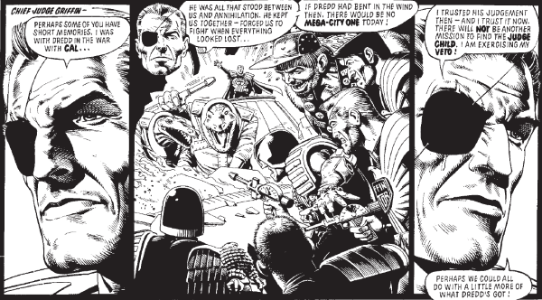

Chief Judge Jürgen Griffin (following Cal, preceding McGruder's first term) was principal of The Academy of Law and a key part of the retaliation against the mad tyrant Cal. During The Apocalypse War, he was captured and brainwashed by the Sovs.
Art by Brian Bolland
| Story Title | Parts | Pages | w indicates a wraparound coverCovers | Year(s) | Issues | Writer | Artist | Colourist | Letterer |
|---|---|---|---|---|---|---|---|---|---|
From Judge Dredd[The Academy of Law] | 2 | 9 | 0 | 1977 | Reprints: JDA'8527-28 | John Wagner | 1: Ian Gibson 2: Mike McMahon various | [b&w] | 1: Bill Nuttall 2: Tony Jacob various |
From Judge Dredd Featuring: ‑ Judge‑Tutor Pepper ‑ FergeeThe Day the Law Died | 20 | 116.5 | 89: Mike McMahon 94: Mike McMahon 98: Brian Bolland 105: Brian Bolland4 | 1978-1979 | 89-108 | John Wagner | Mike McMahon: 1‑3, 8‑9, 11‑12 Brett Ewins: 4, 5(P), 17(P) Brendan McCarthy: 5(I), 17(I) Brian Bolland: 6‑7(P), 10, 13‑14 Garry Leach: 6‑7(I), 15 Ron Smith: 16, 18‑20various | [b&w] | Tom Frame: 1‑2, 5‑20 Tom Knight: 3 Jack Potter: 4 various |
From Judge DreddThe Judge Child | 26 | 163 | 156: Brian Bolland 159: Ron Smith 160: Mike McMahon 161: Brian Bolland 163: Mike McMahon 164: Ron Smith 170: Mike McMahon 172: Brian Bolland 173: Brian Bolland9 | 1980 | 156-181 | Alan Grant John Wagnervarious | Brian Bolland: 1,7,17‑18 Ron Smith: 2‑4,9‑10,12‑14,19‑20,24‑26 Mike McMahon: 5‑6,8,11,15‑16,21‑23 various | <-- pp1-2e., [b&w] | Tom Frame |
From Judge DreddBlock War | 1 | 6 | Brian Bolland 1 | 1980 | 182 | Kelvin Gosnell Alan Grantvarious | Brian Bolland | <-- pp1-2, [b&w] | Tom Frame |
From Judge DreddAny Confessions | 1 | 7 | Ian Gibson 1 | 1981 | 201 | Alan Grant John Wagnervarious | Ian Gibson | <-- pp1-2, [b&w] | Tom Frame |
From Judge DreddThe Apocalypse War | 25 | 153 | 245: Carlos Ezquerra 250: Carlos Ezquerra 254: Carlos Ezquerra 256: Carlos Ezquerra 262: Robin Smith 265: Robin Smith 267: Brett Ewins 7 | 1982 | 245-267, 269-270 | Alan Grant John Wagnervarious | Carlos Ezquerra | <-- 46pp, [b&w] | Steve Potter: 1‑4 Tom Frame: 5‑25 various |
From Judge Dredd, Low Life & The Simping Detective Has three supertitles: ‑ Judge Dredd ‑ Low Life ‑ The Simping DetectiveTrifecta | 1 | 28 | Cliff Robinson & Dylan Teague (C) 1 | 2012 | 1812 | Al Ewing Simon Spurrier Rob Williams various | Carl Critchlow | <-- | Simon Bowland |
From Judge DreddThe Dead Chief Judges' Society | 1 | 6 | David Millgate 1 | 2022 | 2267 | Kenneth Niemand | Rob Richardson | <-- | Annie Parkhouse |
| year | episodes | pages |
| 1977 | 2 | 9 |
| 1978 | 5 | 30 |
| 1979 | 15 | 86.5 |
| 1980 | 27 | 169 |
| 1981 | 1 | 7 |
| 1982 | 25 | 153 |
| 1983 | 0 | 0 |
| 1984 | 0 | 0 |
| 1985 | 0 | 0 |
| 1986 | 0 | 0 |
| 1987 | 0 | 0 |
| 1988 | 0 | 0 |
| 1989 | 0 | 0 |
| 1990 | 0 | 0 |
| 1991 | 0 | 0 |
| 1992 | 0 | 0 |
| 1993 | 0 | 0 |
| 1994 | 0 | 0 |
| 1995 | 0 | 0 |
| 1996 | 0 | 0 |
| 1997 | 0 | 0 |
| 1998 | 0 | 0 |
| 1999 | 0 | 0 |
| 2000 | 0 | 0 |
| 2001 | 0 | 0 |
| 2002 | 0 | 0 |
| 2003 | 0 | 0 |
| 2004 | 0 | 0 |
| 2005 | 0 | 0 |
| 2006 | 0 | 0 |
| 2007 | 0 | 0 |
| 2008 | 0 | 0 |
| 2009 | 0 | 0 |
| 2010 | 0 | 0 |
| 2011 | 0 | 0 |
| 2012 | 1 | 28 |
| 2013 | 0 | 0 |
| 2014 | 0 | 0 |
| 2015 | 0 | 0 |
| 2016 | 0 | 0 |
| 2017 | 0 | 0 |
| 2018 | 0 | 0 |
| 2019 | 0 | 0 |
| 2020 | 0 | 0 |
| 2021 | 0 | 0 |
| 2022 | 1 | 6 |
| 2023 | 0 | 0 |
| 2024 | 0 | 0 |